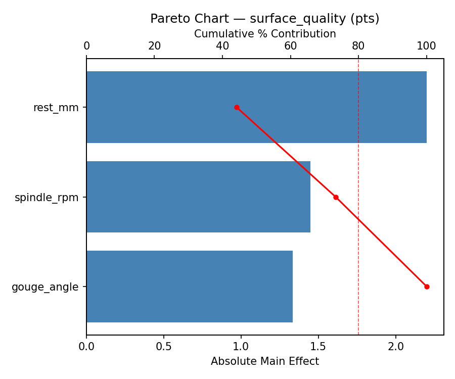
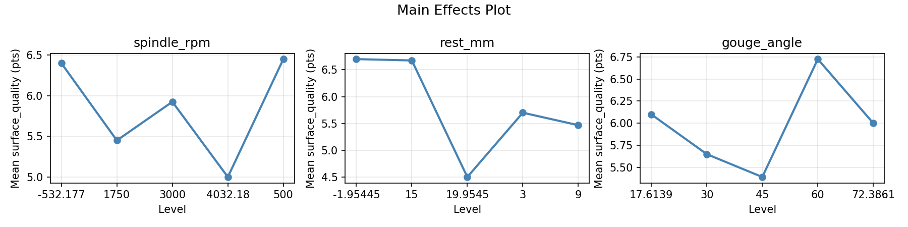
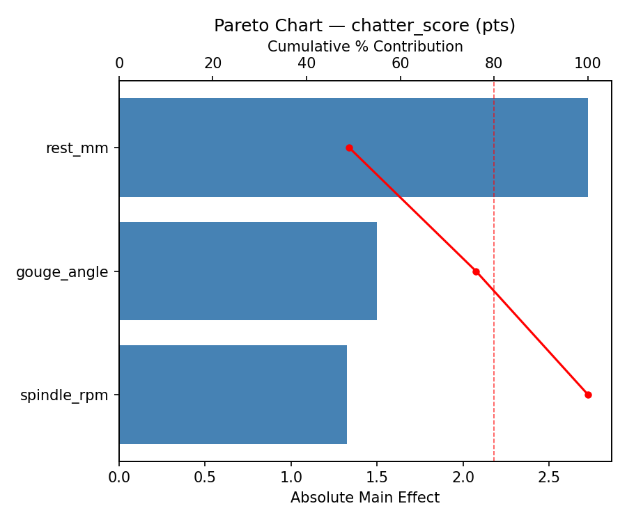
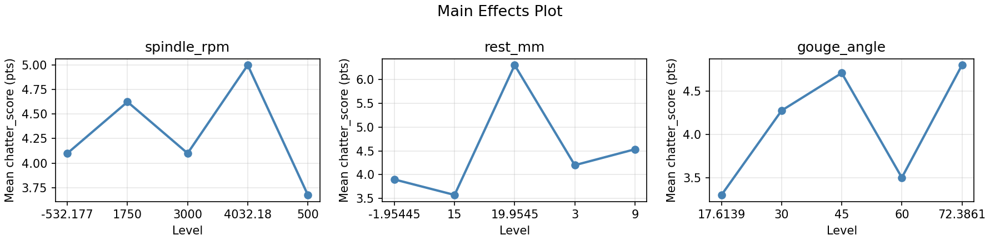
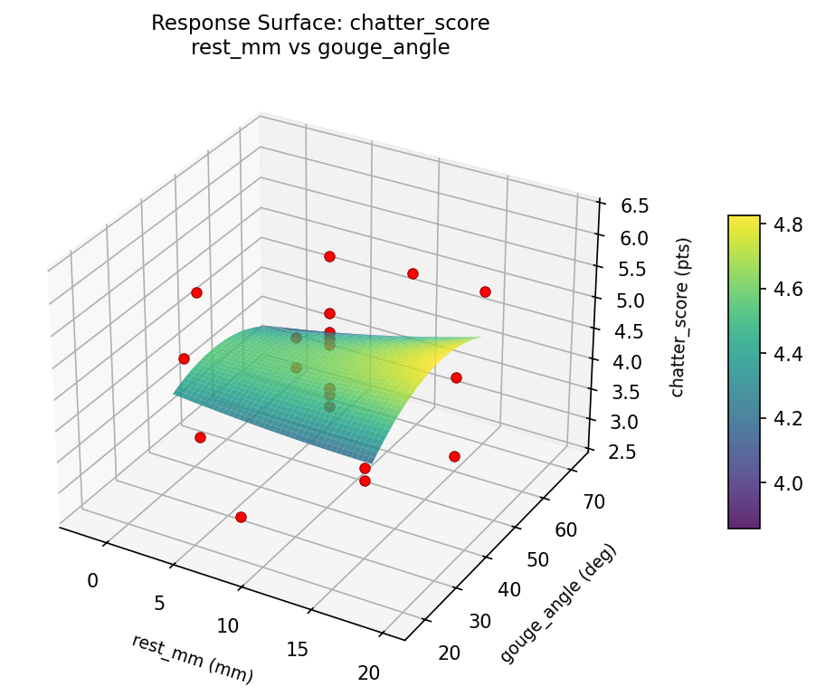
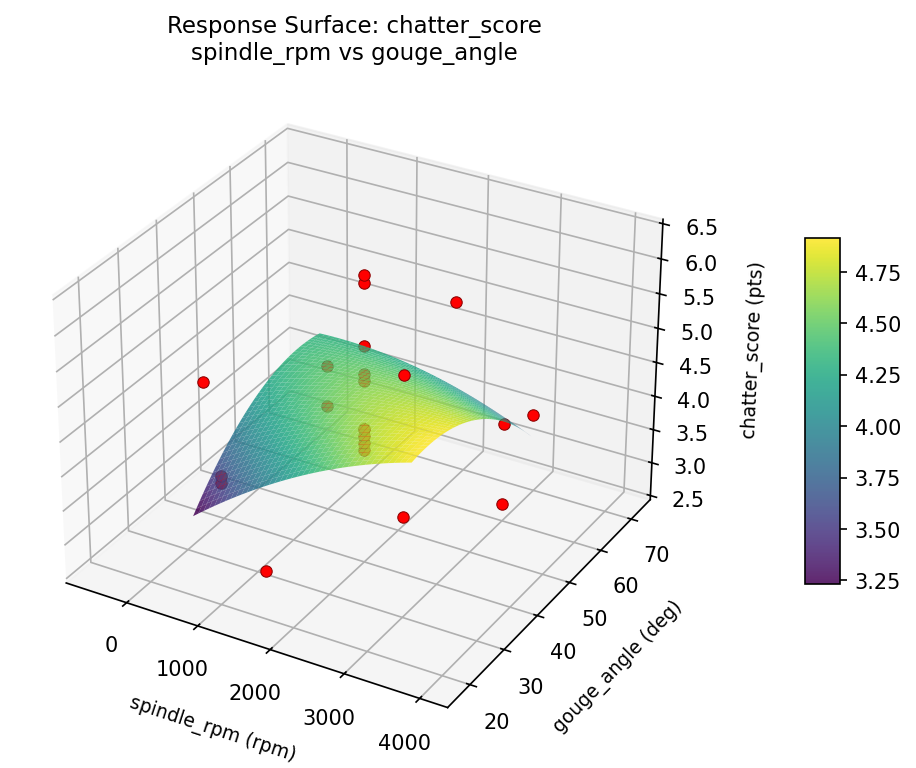
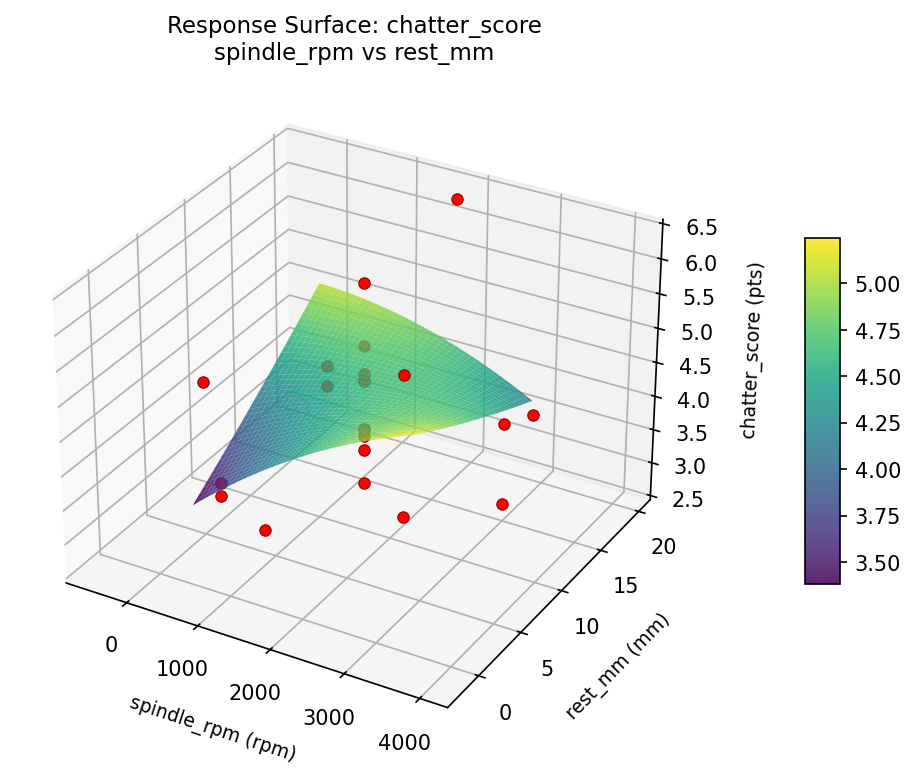
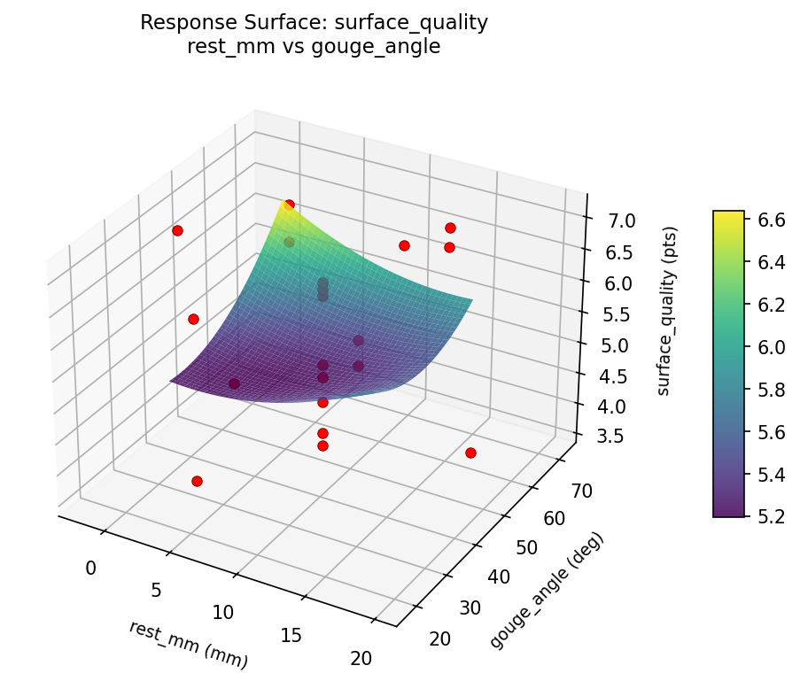
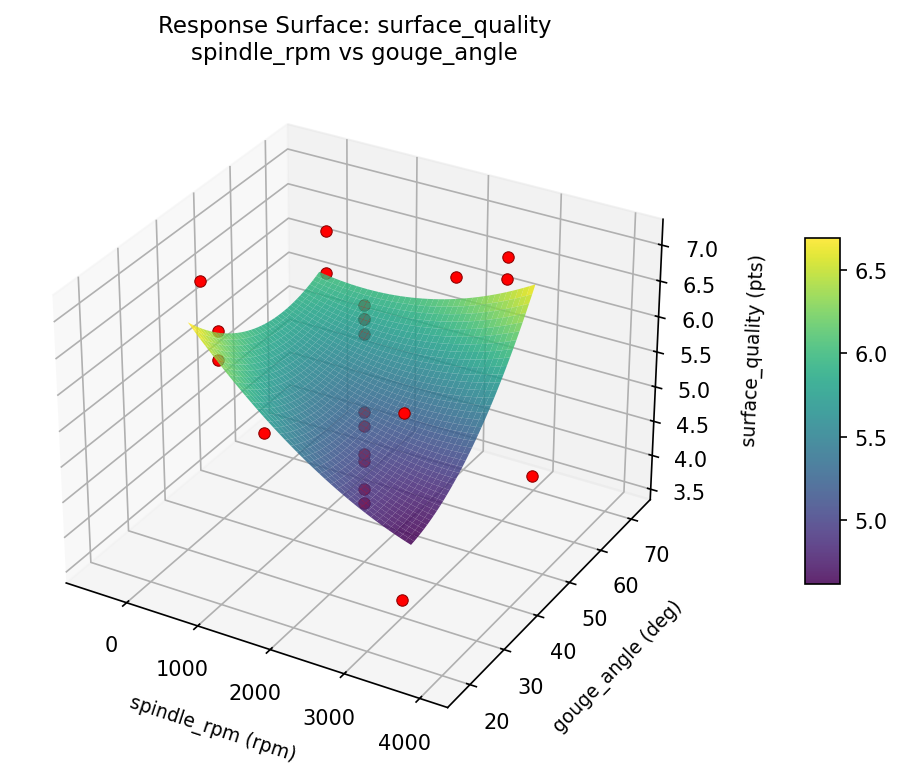
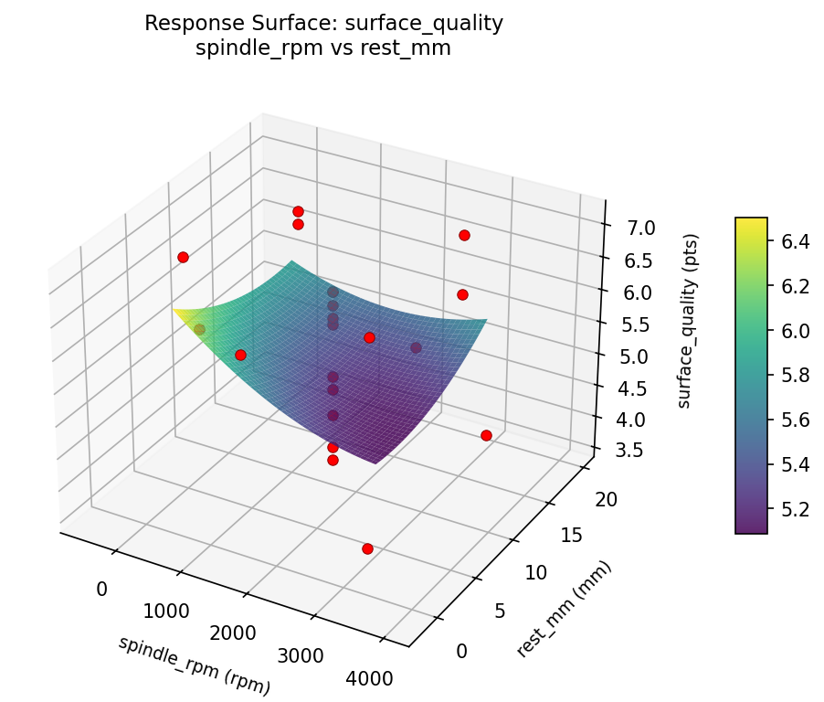

Summary
This experiment investigates wood lathe turning quality. Central composite design to maximize surface quality and minimize chatter by tuning spindle speed, tool rest distance, and gouge angle.
The design varies 3 factors: spindle rpm (rpm), ranging from 500 to 3000, rest mm (mm), ranging from 3 to 15, and gouge angle (deg), ranging from 30 to 60. The goal is to optimize 2 responses: surface quality (pts) (maximize) and chatter score (pts) (minimize). Fixed conditions held constant across all runs include wood = maple_burl, blank diam = 200mm.
A Central Composite Design (CCD) was selected to fit a full quadratic response surface model, including curvature and interaction effects. With 3 factors this produces 22 runs including center points and axial (star) points that extend beyond the factorial range.
Quadratic response surface models were fitted to capture potential curvature and factor interactions. The RSM contour plots below visualize how pairs of factors jointly affect each response.
Key Findings
For surface quality, the most influential factors were rest mm (44.1%), spindle rpm (29.1%), gouge angle (26.8%). The best observed value was 7.1 (at spindle rpm = 4032.18, rest mm = 9, gouge angle = 45).
For chatter score, the most influential factors were rest mm (49.1%), gouge angle (27.0%), spindle rpm (23.9%). The best observed value was 2.7 (at spindle rpm = 4032.18, rest mm = 9, gouge angle = 45).
Recommended Next Steps
- Run confirmation experiments at the predicted optimal settings to validate the model.
- Consider whether any fixed factors should be varied in a future study.
Experimental Setup
Factors
| Factor | Low | High | Unit |
|---|
spindle_rpm | 500 | 3000 | rpm |
rest_mm | 3 | 15 | mm |
gouge_angle | 30 | 60 | deg |
Fixed: wood = maple_burl, blank_diam = 200mm
Responses
| Response | Direction | Unit |
|---|
surface_quality | ↑ maximize | pts |
chatter_score | ↓ minimize | pts |
Configuration
{
"metadata": {
"name": "Wood Lathe Turning Quality",
"description": "Central composite design to maximize surface quality and minimize chatter by tuning spindle speed, tool rest distance, and gouge angle"
},
"factors": [
{
"name": "spindle_rpm",
"levels": [
"500",
"3000"
],
"type": "continuous",
"unit": "rpm"
},
{
"name": "rest_mm",
"levels": [
"3",
"15"
],
"type": "continuous",
"unit": "mm"
},
{
"name": "gouge_angle",
"levels": [
"30",
"60"
],
"type": "continuous",
"unit": "deg"
}
],
"fixed_factors": {
"wood": "maple_burl",
"blank_diam": "200mm"
},
"responses": [
{
"name": "surface_quality",
"optimize": "maximize",
"unit": "pts"
},
{
"name": "chatter_score",
"optimize": "minimize",
"unit": "pts"
}
],
"settings": {
"operation": "central_composite",
"test_script": "use_cases/207_lathe_turning/sim.sh"
}
}
Experimental Matrix
The Central Composite Design produces 22 runs. Each row is one experiment with specific factor settings.
| Run | spindle_rpm | rest_mm | gouge_angle |
|---|
| 1 | 1750 | 9 | 45 |
| 2 | 3000 | 3 | 60 |
| 3 | 500 | 15 | 30 |
| 4 | 1750 | 19.9545 | 45 |
| 5 | 1750 | 9 | 45 |
| 6 | -532.177 | 9 | 45 |
| 7 | 1750 | 9 | 17.6139 |
| 8 | 1750 | 9 | 45 |
| 9 | 3000 | 15 | 30 |
| 10 | 4032.18 | 9 | 45 |
| 11 | 1750 | 9 | 45 |
| 12 | 1750 | -1.95445 | 45 |
| 13 | 1750 | 9 | 45 |
| 14 | 500 | 3 | 60 |
| 15 | 1750 | 9 | 45 |
| 16 | 3000 | 3 | 30 |
| 17 | 1750 | 9 | 72.3861 |
| 18 | 3000 | 15 | 60 |
| 19 | 1750 | 9 | 45 |
| 20 | 500 | 3 | 30 |
| 21 | 500 | 15 | 60 |
| 22 | 1750 | 9 | 45 |
Step-by-Step Workflow
1
Preview the design
$ python doe.py info --config use_cases/207_lathe_turning/config.json
2
Generate the runner script
$ python doe.py generate --config use_cases/207_lathe_turning/config.json \
--output use_cases/207_lathe_turning/results/run.sh --seed 42
3
Execute the experiments
$ bash use_cases/207_lathe_turning/results/run.sh
4
Analyze results
$ python doe.py analyze --config use_cases/207_lathe_turning/config.json
5
Get optimization recommendations
$ python doe.py optimize --config use_cases/207_lathe_turning/config.json
6
Generate the HTML report
$ python doe.py report --config use_cases/207_lathe_turning/config.json \
--output use_cases/207_lathe_turning/results/report.html
Real-World Experiment Workflow
ℹ
Physical Woodworking Test? Use the Manual Workflow
Woodworking experiments involve real wood, tools, and craftsmanship. Joint strength, surface quality, and finish must be physically tested. The simulation script above is for demonstration. For your real experiments, use record, status, and export-worksheet.
$ python doe.py export-worksheet --config use_cases/207_lathe_turning/config.json \
--format csv --output worksheet.csv
$ python doe.py status --config use_cases/207_lathe_turning/config.json
$ python doe.py record --config use_cases/207_lathe_turning/config.json --run 1
$ python doe.py analyze --config use_cases/207_lathe_turning/config.json --partial
$ python doe.py analyze --config use_cases/207_lathe_turning/config.json
$ python doe.py optimize --config use_cases/207_lathe_turning/config.json
$ python doe.py report --config use_cases/207_lathe_turning/config.json \
--output report.html
✔
Works Without a Test Script
The analysis pipeline doesn't care how results were produced. Record your measurements with record, and the full analysis, optimization, and reporting pipeline works identically. Use --partial to get early insights before all runs are complete.
Features Exercised
| Feature | Value |
|---|
| Design type | central_composite |
| Factor types | continuous (all 3) |
| Arg style | double-dash |
| Responses | 2 (surface_quality ↑, chatter_score ↓) |
| Total runs | 22 |
Analysis Results
Generated from actual experiment runs using the DOE Helper Tool.
Response: surface_quality
Top factors: rest_mm (44.1%), spindle_rpm (29.1%), gouge_angle (26.8%).
Pareto Chart

Main Effects Plot

Response: chatter_score
Top factors: rest_mm (49.1%), gouge_angle (27.0%), spindle_rpm (23.9%).
Pareto Chart

Main Effects Plot

Response Surface Plots
3D surfaces fitted with quadratic RSM. Red dots are observed data points.
chatter score rest mm vs gouge angle

chatter score spindle rpm vs gouge angle

chatter score spindle rpm vs rest mm

surface quality rest mm vs gouge angle

surface quality spindle rpm vs gouge angle

surface quality spindle rpm vs rest mm

Full Analysis Output
RSM surface: rsm_surface_quality_spindle_rpm_vs_rest_mm.png
RSM surface: rsm_surface_quality_spindle_rpm_vs_gouge_angle.png
RSM surface: rsm_surface_quality_rest_mm_vs_gouge_angle.png
RSM surface: rsm_chatter_score_spindle_rpm_vs_rest_mm.png
RSM surface: rsm_chatter_score_spindle_rpm_vs_gouge_angle.png
RSM surface: rsm_chatter_score_rest_mm_vs_gouge_angle.png
=== Main Effects: surface_quality ===
Factor Effect Std Error % Contribution
--------------------------------------------------------------
rest_mm 2.2000 0.2249 44.1%
spindle_rpm 1.4500 0.2249 29.1%
gouge_angle 1.3333 0.2249 26.8%
=== Summary Statistics: surface_quality ===
spindle_rpm:
Level N Mean Std Min Max
------------------------------------------------------------
-532.177 1 6.4000 0.0000 6.4000 6.4000
1750 12 5.4500 1.0149 3.9000 6.7000
3000 4 5.9250 1.5945 3.6000 7.1000
4032.18 1 5.0000 0.0000 5.0000 5.0000
500 4 6.4500 0.3000 6.2000 6.8000
rest_mm:
Level N Mean Std Min Max
------------------------------------------------------------
-1.95445 1 6.7000 0.0000 6.7000 6.7000
15 4 6.6750 0.3775 6.2000 7.1000
19.9545 1 4.5000 0.0000 4.5000 4.5000
3 4 5.7000 1.4283 3.6000 6.8000
9 12 5.4667 0.9519 3.9000 6.5000
gouge_angle:
Level N Mean Std Min Max
------------------------------------------------------------
17.6139 1 6.1000 0.0000 6.1000 6.1000
30 4 5.6500 1.3796 3.6000 6.6000
45 12 5.3917 1.0300 3.9000 6.7000
60 4 6.7250 0.3775 6.2000 7.1000
72.3861 1 6.0000 0.0000 6.0000 6.0000
=== Main Effects: chatter_score ===
Factor Effect Std Error % Contribution
--------------------------------------------------------------
rest_mm 2.7250 0.2013 49.1%
gouge_angle 1.5000 0.2013 27.0%
spindle_rpm 1.3250 0.2013 23.9%
=== Summary Statistics: chatter_score ===
spindle_rpm:
Level N Mean Std Min Max
------------------------------------------------------------
-532.177 1 4.1000 0.0000 4.1000 4.1000
1750 12 4.6250 0.9430 3.3000 6.3000
3000 4 4.1000 1.3266 2.7000 5.9000
4032.18 1 5.0000 0.0000 5.0000 5.0000
500 4 3.6750 0.2500 3.4000 4.0000
rest_mm:
Level N Mean Std Min Max
------------------------------------------------------------
-1.95445 1 3.9000 0.0000 3.9000 3.9000
15 4 3.5750 0.5965 2.7000 4.0000
19.9545 1 6.3000 0.0000 6.3000 6.3000
3 4 4.2000 1.1518 3.4000 5.9000
9 12 4.5333 0.7843 3.3000 6.2000
gouge_angle:
Level N Mean Std Min Max
------------------------------------------------------------
17.6139 1 3.3000 0.0000 3.3000 3.3000
30 4 4.2750 1.0905 3.6000 5.9000
45 12 4.7083 0.8702 3.8000 6.3000
60 4 3.5000 0.5944 2.7000 4.0000
72.3861 1 4.8000 0.0000 4.8000 4.8000
Pareto chart (surface_quality): use_cases/207_lathe_turning/results/analysis/pareto_surface_quality.png
Pareto chart (chatter_score): use_cases/207_lathe_turning/results/analysis/pareto_chatter_score.png
Main effects (surface_quality): use_cases/207_lathe_turning/results/analysis/main_effects_surface_quality.png
Main effects (chatter_score): use_cases/207_lathe_turning/results/analysis/main_effects_chatter_score.png
Optimization Recommendations
=== Optimization: surface_quality ===
Direction: maximize
Best observed run: #2
spindle_rpm = 4032.18
rest_mm = 9
gouge_angle = 45
Value: 7.1
RSM Model (linear, R² = 0.0717, Adj R² = -0.0830):
Coefficients:
intercept +5.7409
spindle_rpm +0.2819
rest_mm -0.1829
gouge_angle +0.0370
RSM Model (quadratic, R² = 0.5407, Adj R² = 0.1961):
Coefficients:
intercept +5.8080
spindle_rpm +0.2819
rest_mm -0.1829
gouge_angle +0.0370
spindle_rpm*rest_mm -0.2875
spindle_rpm*gouge_angle +0.6375
rest_mm*gouge_angle +0.5375
spindle_rpm^2 +0.0564
rest_mm^2 +0.2364
gouge_angle^2 -0.3936
Curvature analysis:
gouge_angle coef=-0.3936 concave (has a maximum)
rest_mm coef=+0.2364 convex (has a minimum)
spindle_rpm coef=+0.0564 negligible curvature
Notable interactions:
spindle_rpm*gouge_angle coef=+0.6375 (synergistic)
rest_mm*gouge_angle coef=+0.5375 (synergistic)
Predicted optimum (from quadratic model):
spindle_rpm = 1750
rest_mm = -1.95445
gouge_angle = 45
Predicted value: 6.9301
Model quality: Moderate fit — use predictions directionally, not precisely.
Factor importance:
1. spindle_rpm (effect: 2.1, contribution: 39.3%)
2. gouge_angle (effect: 1.9, contribution: 35.4%)
3. rest_mm (effect: 1.4, contribution: 25.3%)
=== Optimization: chatter_score ===
Direction: minimize
Best observed run: #2
spindle_rpm = 4032.18
rest_mm = 9
gouge_angle = 45
Value: 2.7
RSM Model (linear, R² = 0.1473, Adj R² = 0.0052):
Coefficients:
intercept +4.3500
spindle_rpm -0.4022
rest_mm +0.1046
gouge_angle -0.1236
RSM Model (quadratic, R² = 0.6687, Adj R² = 0.4203):
Coefficients:
intercept +4.2408
spindle_rpm -0.4022
rest_mm +0.1046
gouge_angle -0.1236
spindle_rpm*rest_mm +0.5625
spindle_rpm*gouge_angle -0.5375
rest_mm*gouge_angle -0.5875
spindle_rpm^2 -0.0604
rest_mm^2 -0.0754
gouge_angle^2 +0.2996
Curvature analysis:
gouge_angle coef=+0.2996 convex (has a minimum)
rest_mm coef=-0.0754 negligible curvature
spindle_rpm coef=-0.0604 negligible curvature
Notable interactions:
rest_mm*gouge_angle coef=-0.5875 (antagonistic)
spindle_rpm*rest_mm coef=+0.5625 (synergistic)
spindle_rpm*gouge_angle coef=-0.5375 (antagonistic)
Predicted optimum (from quadratic model):
spindle_rpm = 500
rest_mm = 3
gouge_angle = 60
Predicted value: 6.2661
Model quality: Moderate fit — use predictions directionally, not precisely.
Factor importance:
1. spindle_rpm (effect: 2.3, contribution: 49.9%)
2. gouge_angle (effect: 1.2, contribution: 26.2%)
3. rest_mm (effect: 1.1, contribution: 23.9%)